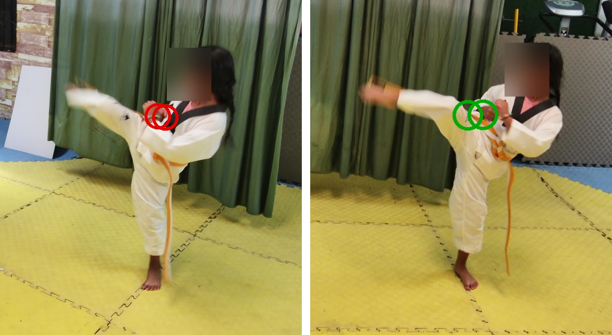
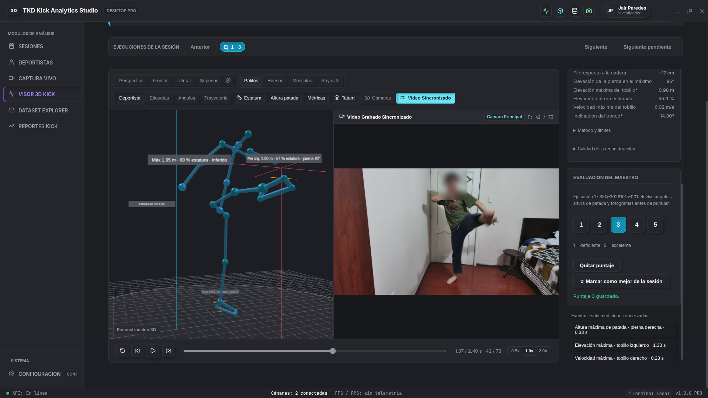
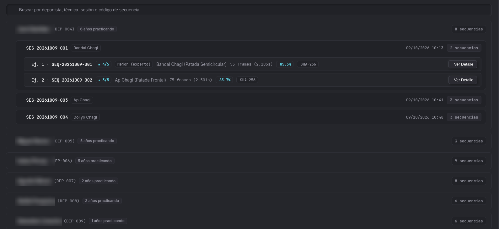
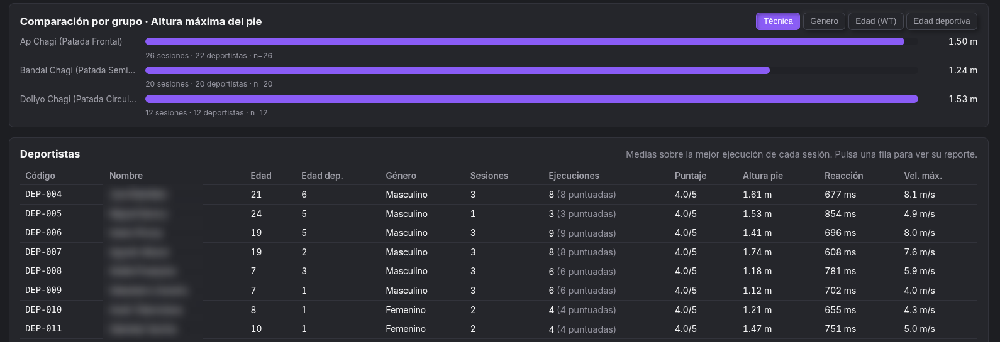
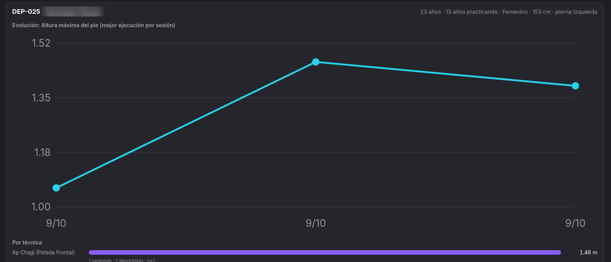
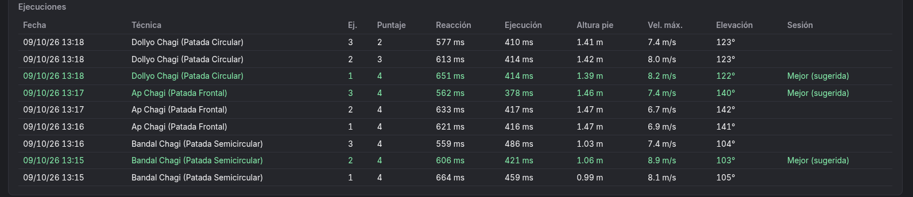

Cada patada, un dato: seguimiento corporal 3D en Tae Kwon Do
Dos cámaras, un esqueleto en tres dimensiones y reportes automáticos de Ap, Bandal y Dollyo Chagi.
ESQUELETO 3D · 23 PUNTOS DEL CUERPO
01 · Contexto
¿Cómo se evalúa hoy una patada?
El ojo del entrenador
Se revisan las fases de la patada: flexión, extensión y recuperación. Funciona, pero depende de la experiencia y del lugar desde donde se mira.
El video
Ayuda a repetir y observar el gesto. Pero muestra una sola vista y medir algo exige trabajo manual, video por video.
El laboratorio
Los sistemas con marcadores son muy precisos, pero costosos, lejos del gimnasio y con preparación larga para el deportista.
Lo que se ve no siempre se puede medir, guardar y comparar en el tiempo.
02 · Por qué dos cámaras
Una sola cámara no ve todo

CÁMARA 1 · la pierna tapa el brazoCÁMARA 2 · el brazo se ve
Codo
52 %
Muñeca
45 %
Codo
98 %
Muñeca
97 %
Barras: qué tan seguro está el sistema de dónde está cada articulación. Bandal Chagi real; rostro difuminado.
03 · La propuesta
De la patada al reporte, en cuatro pasos
01
Dos cámaras
Graban la patada al mismo tiempo desde dos ángulos.
02
Esqueleto 3D
El programa reconstruye el cuerpo en tres dimensiones.
03
Dataset
Cada patada se guarda como un registro ordenado y calificado.
04
Reportes
Por deportista y por grupo, automáticos.
Sin trajes, sin marcadores, en el propio gimnasio y con la ropa de entrenamiento.
04 · En el gimnasio
Así se ve una jornada de captura
Captura en vivo: las dos cámaras detectan el cuerpo del deportista al mismo tiempo, cada una desde su ángulo.
EQUIPO2 cámaras en trípodes y una computadora portátilESPACIOCámaras a 1,76 m entre sí, mirando la zona de pateo desde dos ángulosDEPORTISTACon su dobok, sin marcadores ni sensores en el cuerpoDINÁMICAUna técnica por sesión, series de hasta 3 patadasINICIOUn pitido marca la salida de cada patada
05 · Cómo se adquieren los datos
Antes, durante y después de cada patada
ANTES · 1 VEZ
Ubicar las cámaras
Se muestra un tablero de calibración a las dos cámaras. Así el programa sabe dónde está cada una y combina sus vistas.
ANTES · POR DEPORTISTA
Medir al deportista
Una captura de pie mide su estatura y el largo de brazos, muslos y piernas.
DURANTE
Pitido y patada
El pitido marca el tiempo cero. Las dos cámaras graban a la vez, 30 imágenes por segundo, color y profundidad.
DESPUÉS
Guardar y procesar
La grabación se guarda y el programa la convierte en un esqueleto 3D con sus métricas.
CÁMARA 1CÁMARA 2
Las dos cámaras están unidas por un cable: disparan juntas, con una diferencia de 1 a 2 milésimas de segundo.
06 · Qué hace el programa por dentro
De dos videos a un esqueleto 3D
1
Encuentra al deportista
aunque haya más gente
2
Ubica 23 puntos del cuerpo
incluidos talón y punta del pie
3
Une las dos vistas
y arma el esqueleto 3D
4
Separa lo visto de lo estimado
cada punto lleva su etiqueta
5
Calcula y guarda
métricas, puntaje y registro
Lo que una cámara no ve, la otra lo completa
Cada cámara “apunta” a las articulaciones. Cuando una pierde de vista la muñeca, la otra la sigue viendo.
1 · Encuentra al deportista
En un gimnasio hay entrenadores, compañeros y público. El programa reconoce a todas las personas y sigue solo al deportista evaluado durante toda la patada.
Usa modelos de inteligencia artificial entrenados para reconocer el cuerpo humano.
2 · Ubica 23 puntos del cuerpo
Cabeza, hombros, codos, muñecas, caderas, rodillas, tobillos y, muy importante para una patada, talón y punta del pie.
Lo hace en cada imagen: 30 veces por segundo y en las dos cámaras.
3 · Une las dos vistas
Como el programa sabe dónde está cada cámara, combina lo que ven ambas y obtiene la posición real de cada articulación en el espacio.
Además respeta el cuerpo del deportista: los huesos mantienen su largo, medido al inicio.
4 · Dice qué vio y qué estimó
VISTO al menos una cámara lo vio con claridad.
ESTIMADO ninguna lo vio; se completa con el resto del cuerpo y los instantes vecinos.
En la campaña, el 96,6 % de los puntos fueron vistos directamente.
5 · Calcula y guarda
Sobre el esqueleto se calculan las métricas de la patada y todo queda guardado de forma ordenada: deportista, sesión, patada, métricas y puntaje del entrenador.
Eso es lo que forma el dataset.
07 · El resultado: el visor 3D
La patada, desde cualquier ángulo

Girar el esqueleto: frente, lado o desde arriba.
Video al lado, sincronizado con el esqueleto.
Ángulos de rodillas, caderas, codos y tobillos.
Trayectoria del pie y altura de la patada.
El entrenador califica de 1 a 5 y marca la mejor patada de la serie.
08 · Qué mide de cada patada
Seis métricas automáticas por patada
Tiempo de reacción
Desde el pitido hasta que el pie empieza a moverse.
Tiempo de ejecución
Desde que arranca el pie hasta su punto más alto.
Altura del pie
En metros y como porcentaje de la estatura del deportista.
Velocidad del pie
Velocidad máxima del tobillo durante la patada, en m/s.
Elevación de la pierna
Ángulo que alcanza la pierna respecto a la vertical.
L/RPierna que patea
Se detecta sola: la que lleva el pie más alto.
Nadie marca puntos a mano: todo sale del esqueleto 3D, con las mismas reglas para todos los deportistas.
09 · El dataset
Una ficha por cada patada, bien ordenada
NIVEL 1
Deportista
Código, edad, años de práctica, género, estatura, peso y pierna dominante.
NIVEL 2
Sesión
Una técnica en una fecha. Agrupa la serie de patadas.
NIVEL 3
Ejecución
Cada patada: sus 6 métricas, el puntaje del entrenador y el esqueleto 3D cuadro a cuadro.
Privacidad
Los nombres no salen del sistema: cada deportista es un código (DEP-004). El video se usa para revisar y no se incluye en la exportación.
Confiable
Cada archivo lleva una “huella digital”: el sistema puede comprobar que ningún dato fue alterado.
Exportable
Tablas para hojas de cálculo y archivos listos para investigación e inteligencia artificial.
10 · Qué contiene
Primera campaña: un día en el gimnasio
0
deportistas
16 hombres · 6 mujeres
0
sesiones
una técnica por sesión
0
patadas registradas
3 a 9 por deportista
0
posturas 3D
cuadro a cuadro
0s
de movimiento
≈ 2,6 s por patada
Patadas por técnica
Ap Chagi66
Bandal Chagi49
Dollyo Chagi36
Quiénes participaron
Edades de 6 a 24 años (media 13,5)
De 1 a 13 años de práctica (media 3,5)
19 diestros de pierna, 3 zurdos
Gimnasio Villalba's Tiger
11 · Explorador del dataset
Todo a la mano: deportista → sesión → patada

Buscar por deportista, técnica o sesión.
Ver cada patada con su puntaje (4/5) y si fue la mejor de la serie.
Abrir cualquier patada en el visor 3D.
Verificar que todo el dataset esté íntegro con un clic.
Exportar para análisis o investigación.
12 · El ojo experto también es dato
Cada patada, calificada de 1 a 5
Rúbrica de 4 criterios
Criterio
Cumple (1 punto)
Giro del pie de apoyo
90° o más
Altura del pie
≥ 95 % de la estatura (Ap, Dollyo) · ≥ 80 % (Bandal)
Velocidad del pie
tercio más rápido de su técnica
Tiempo de reacción
tercio más rápido de su técnica
Medio cumplimiento = 0,5. Puntaje = 1 + suma. Un 5 exige cumplir los cuatro.
Cómo quedaron las 151 patadas
01
132
413
714
265
Promedio 3,73. Dollyo 3,97 · Bandal 3,71 · Ap 3,61.
El puntaje convierte el criterio del entrenador en una etiqueta: es lo que permitiría, a futuro, enseñarle a una computadora a evaluar patadas.
13 · Qué dicen los datos
Los números reflejan lo que el entrenador ya sabe
Altura del pie · % de la estatura
Ap Chagi98 %
Bandal Chagi83 %
Dollyo Chagi98 %
Patadas a la cabeza llegan casi a la estatura; la Bandal, dirigida al tronco, se queda más abajo.
Velocidad del pie · m/s por edad
< 12 años5,1
12–17 años6,7
≥ 18 años7,5
La velocidad crece con la edad, como se espera en el desarrollo deportivo.
Reacción media 672 msEjecución media 449 msVelocidad media 6,4 m/s124 patadas con pierna derecha · 27 con izquierdaHombres 6,7–7,0 m/s · Mujeres 5,4–6,0 m/s
14 · Módulo de reportes
Reporte de grupo: compara en segundos
Filtrar porDeportistaTécnicaGéneroEdadAños de prácticaFechas

Para cada métrica: promedio, variación, mínimo y máximo.
Barras que comparan por técnica, género o edad.
Tabla de deportistas; un clic abre su reporte individual.
Usa la mejor patada de cada sesión.
15 · Módulo de reportes
Reporte por deportista: su evolución

Evolución de la altura del pie, sesión a sesión.

Detalle de cada patada; en verde, la mejor de cada serie.
Sus métricas por técnica y por sesión.
Una gráfica muestra si mejora con el tiempo.
Todas sus patadas, con métricas y puntaje.
Descarga en CSV para Excel.
¿Cuál es la mejor patada?
La que elige el entrenador. Si no elige, el sistema sugiere: mayor puntaje → más rápida → mejor reacción.
16 · Demostración
El sistema, en vivo
Un recorrido por el programa con patadas ya registradas.
01 Visor 3D
Abrir una patada, girar el esqueleto y verla en cámara lenta junto al video.
02 Explorador
Navegar el dataset por deportista, sesión y técnica.
03 Reportes
Filtrar un grupo y ver la evolución de un deportista.
17 · En el entrenamiento
¿Para qué le sirve al entrenador?
Seguir el progreso
Ver con números si un deportista mejora de una sesión a otra.
Comparar con su grupo
Ubicar a cada deportista frente a su categoría, edad o técnica.
Respaldar la observación
Sumar datos objetivos a lo que el entrenador ya ve.
Evaluar a distancia
Calificar las patadas desde otro computador, sin estar en la captura.
Investigar
Una base de datos 3D para estudios de biomecánica e inteligencia artificial.
Otros deportes
El mismo procedimiento sirve para karate o kickboxing.
18 · Del video al dato
No es otra forma de ver el video
Las herramientas de análisis de video ayudan a observar una grabación. Este sistema tiene otro objetivo: medir y acumular.
3D
Dos ángulos a la vez
Combina dos cámaras en un solo cuerpo tridimensional, no una vista plana.
0
Puntos marcados a mano
El cuerpo se ubica solo, en cada imagen y con las mismas reglas.
Dice qué vio
Cada punto indica si fue visto o estimado.
Cada patada se suma
Todo queda en un dataset con reportes por deportista y grupo.
El video sirve para mirar una patada. Aquí, cada patada se puede comparar con todas las demás.
19 · Resultados
Funcionó en el gimnasio, no solo en el laboratorio
0/151
patadas con todas sus métricas calculadas
0img/s
por cámara, en promedio, durante toda la jornada
0%
de los puntos del cuerpo vistos directamente
0cm
diferencia promedio entre la estatura medida y la real
Piernas y pies
Piernas vistas el 99,6 % del tiempo y pies el 94,9 %: justo lo que importa en una patada.
Una sola preparación
Una calibración al inicio bastó para las 151 patadas de toda la jornada.
Todas calificadas
Las 151 patadas tienen su puntaje de 1 a 5 según la rúbrica.
20 · Para llevarse
Lo que queda
01 Sin laboratorio
Un sistema portátil registra la patada en 3D en el propio gimnasio, sin marcadores.
02 Un dataset propio
151 patadas de 22 deportistas, con métricas y calificación del experto.
03 Reportes automáticos
Por deportista y por grupo, listos para el entrenador.
04 Datos con sentido
Distinguen técnicas y edades: sirven para comparar deportistas entre sí.
Próximos pasos: comparar las medidas con un laboratorio de movimiento, sumar más evaluadores, más deportistas y otros deportes de combate.
Gracias
00:00
NOTAS
← → avanzar · F pantalla completa · N notas · T cronómetro · O índice · P vista orador